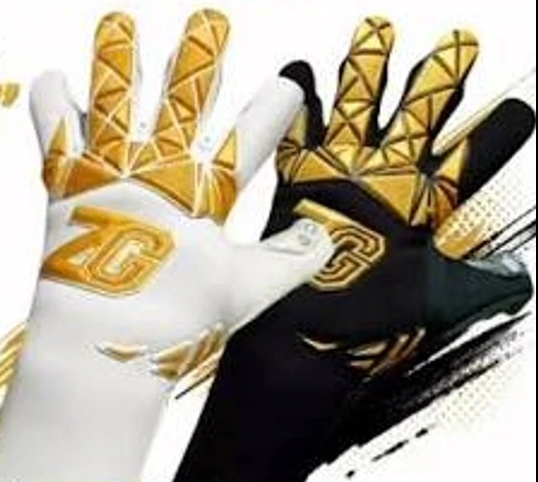
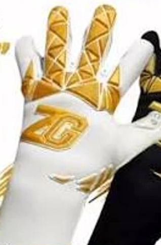
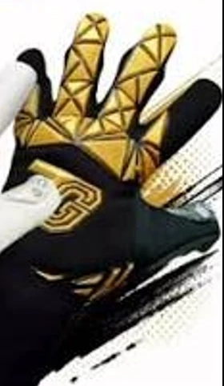

Máximo agarre
Palma dorada para que el balón se quede donde tiene que estar: en tus manos, no en la red.
Nuevo modelo
Ahogando la celebración del rival.
Guantes de portero hechos en México, con látex de calidad profesional y algo más… Para los que se avientan a todo, hasta en cancha de tierra.

Palma dorada para que el balón se quede donde tiene que estar: en tus manos, no en la red.
Pensados para que te olvides del guante y solo pienses en el balón (y en el delantero que ya iba a festejar).
Blanco o negro, siempre con dorado. Porque si vas a tapar, que se vea desde la tribuna.
Catálogo
Cada guante lleva “ZARRAGA” en la muñequera. Lo demás lo pones tú en la cancha.

Blanco con palma y detalles dorados y el logo ZG en el dorso.

Negro con detalles dorados y logo ZG en relieve. El clásico de la casa.
Negro con muñequera larga, para que el guante no se mueva ni en la estirada más larga.
Látex alemán de 4 mm con gel interno. Para el portero que quiere sentir el balón.
La variante de color para los que no pasan desapercibidos en el área.
Para quién
Domingo a las 8 am, cancha de tierra y un delantero que no ha dormido. Ahí es donde se prueba un guante.
Para el que entrena toda la semana y quiere llegar a la visoria con todo.
Para los morritos que apenas empiezan y ya se avientan como si fuera final. [CONFIRMAR TALLAS INFANTILES]
Los inicios…
Todo empezó en 2023 en la Ciudad de México. Un 4 de noviembre lo dijimos fuerte: “Somos ZG, ahogando la celebración del rival.”
Somos una marca mexicana y artesanal de guantes de portero. Hacemos cada par con látex de calidad profesional para los que juegan de verdad: los del llano, los de la liga, los de fuerzas básicas y los que apenas empiezan.
Hecho en CDMX · Desde 2023
“Ser arquero es muy fácil…”
Solo tienes que parar lo que diez de tu equipo no pudieron, aguantar que te echen la culpa de cada gol y que nadie se acuerde de tus atajadas.
Por eso, mínimo, que tus guantes sí te respalden.
Cómo pedir
Revisa el catálogo y elige tu par. ¿Dudas con la talla? [LINK A GUÍA DE TALLAS]
Por Instagram, Facebook o TikTok. [WHATSAPP DE VENTAS]
Te decimos disponibilidad, forma de pago y envío. [PAGOS Y ENVÍOS]
Llegan tus ZG y empieza a ahogar celebraciones.
En cancha
Videos de porteros reales, atajadas, detalles de los guantes y memes que solo entiende un portero.
Preguntas
Usamos látex de calidad profesional. El modelo de corte negativo lleva látex alemán de 4 mm con gel interno.
[AGREGAR GUÍA DE TALLAS: cómo medir la mano y tabla por modelo]
[CONFIRMAR ZONAS, COSTO Y TIEMPO DE ENVÍO]
[FORMAS DE PAGO: transferencia, tarjeta, efectivo, etc.]
También hacemos guantes para porteros infantiles. [CONFIRMAR MODELOS Y TALLAS]
[CONFIRMAR SI HAY ENTREGAS O PUNTO DE VENTA]